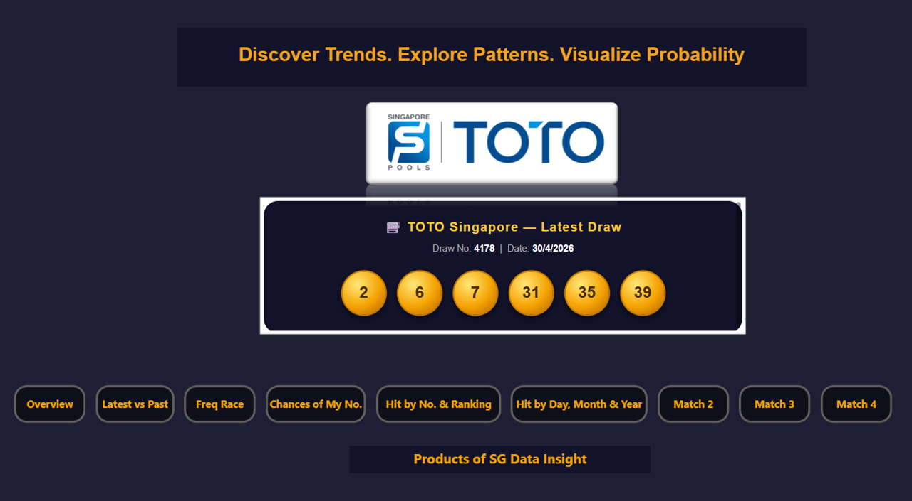
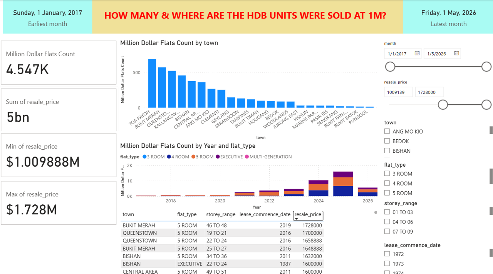

1
Organise the Data
Bring together relevant information, clean the data and prepare it for analysis. Good decisions depend on reliable and understandable data.
Practical AI for Personal Growth and SME Efficiency

TKG AI Hub helps individuals and small enterprises organise data, build meaningful models and turn information into clearer insights for better decisions.
A useful dashboard begins with a real question, well-organised data and clear visual storytelling.
Bring together relevant information, clean the data and prepare it for analysis. Good decisions depend on reliable and understandable data.
Design measures, filters and visual reports that allow users to explore patterns, comparisons and relationships.
Turn results into useful actions—whether for personal planning, business monitoring, market understanding or management reporting.
Two working examples show how the same data-analysis method can be applied to different real-life questions.

This model lets users explore historical Singapore TOTO draw data through number frequency, hit rate, latest-versus-past comparisons, number ranking and matching analysis.
Important: this is an independent historical statistical and learning model. It does not predict winning numbers or guarantee any future outcome.

This model helps users explore Singapore HDB resale transactions, including million-dollar-flat counts, price trends, transaction volume, town comparisons, flat types, storey range and lease characteristics.
It demonstrates how a public dataset can be turned into an interactive decision-support model for buyers, sellers, property observers and analysts.
What happened?
For example: price trends and transaction counts by HDB town, or how often each TOTO number appeared historically.
Why did it happen?
Compare town, flat type, lease and storey characteristics; or examine frequency patterns across selected time periods.
What may happen?
Use historical HDB trends to explore possible market directions. TOTO historical data must not be treated as a winning-number predictor.
What action is sensible?
Use comparisons to support a property shortlist, budget decision or business action plan.
Structure spreadsheets and source data so they can be analysed properly and maintained more easily.
Create practical dashboards, DAX measures, filters and visual reports for clearer monitoring and analysis.
Translate data into trends, comparisons and practical insights for individuals and small enterprises.